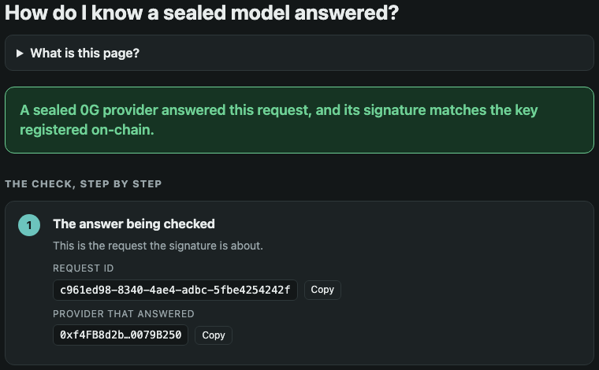
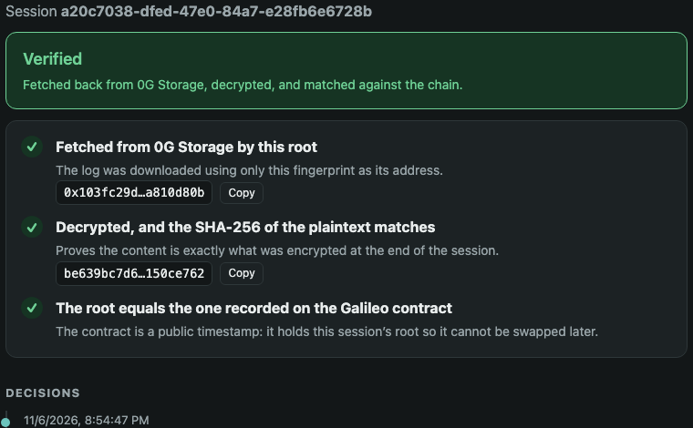

Ask about anything on your screen, out loud or typed. Ishara explains it, points at it, and walks you through it. Every answer comes from sealed models on 0G and leaves a receipt you can check yourself.
Illustration of the pointer. The real thing runs on your machine.
Page text, forms and open tabs go to a model you do not control.
A wrong pointer or a wrong click looks exactly like a right one.
No proof of which model ran, or that the answer is the one it gave.
Every answer leaves a receipt anyone can check, from the provider’s signature to a replayable, encrypted log.
Your voice becomes text on your laptop. Secrets are removed before anything leaves it. No audio and no screenshot is sent.
If it cannot be sure, it asks or stops. It never guesses, and it never falls back to another model.
The ring only moves if a second sealed model, laya, agrees with the first that this control is the one you meant. If 0G cannot be reached, Ishara says so and stops.
A ring glides to the control you asked about.
Plain answers about what is on screen.
Step by step, with Next, Back and Stop.
“Why?” and “and then?” keep the context.
Push to talk, spoken answers, in English.
Reads native apps, not only the browser.
Search, fill forms, open apps, switch tabs, on your order.
Stops instead of guessing, out loud.

Receipt. The signer is recovered from the answer’s own signature and compared with the signer registered on-chain.

Replay. The session log is fetched back from 0G Storage, decrypted, and its root is checked against the Galileo contract.
Real pages from the running helper, from sessions recorded on 6 Nov 2026. A receipt proves a sealed provider signed this request. It does not prove the exact words.
| 0G piece | What it does in Ishara | Without it |
|---|---|---|
| Private Router | Every model call goes only to sealed providers, in private trust mode, and returns a request id. | A normal model API: nothing sealed, nothing to check. |
| 0GM-1.0 | Reads the page and writes the answer, sentence by sentence. | No sealed model for the answer. |
| laya | A second, independent model says yes or no to every pointer. | Nothing checks the first model. |
| 0G Storage | Holds each session’s encrypted log, readable back by its root. | A log that lives on one laptop. |
| Galileo contract | Records the root of each log, so it cannot be swapped later. 0x40F8…64ac on chain 16602. | Nothing to check a replay against. |
Mock verify page and saved pages, real 0G router, 6 Nov 2026. Not yet re-measured after the morning fixes: the point and walk-through classes of the larger eval, which scored 0 of 8 in its last full run. 491 unit tests pass, 2 skipped.
No server or account of ours. If 0G is down, Ishara is down, and says so.
MIT licence. Build and run it from the repository alone.
Voice becomes text on your laptop. No audio and no screenshot leave it.
The 0G key lives only in the local helper. Secrets are stripped twice.
Ishara was built with Claude Code under my direction, and Claude wrote most of the code. I reviewed the two files that carry the trust claims, gate.ts and episode-log.ts, line by line. The models inside the product are the 0G models above plus a local speech model and a local voice. Details are in AI_USE.md.
Ishara has no server of ours. A local helper talks straight to the 0G Router, and a Chrome extension draws the pointer. You need Node 24, Chrome, and a 0G Router key.
git clone https://github.com/harshkas4na/ishara cd ishara && npm install brew install whisper-cpp uv scripts/setup-voice.sh # local voice, once npm run helper:desktop # helper on http://127.0.0.1:7777 # Chrome: chrome://extensions → Developer mode → Load unpacked → extension/ # Then hold Option+Space on a page and ask where something is.